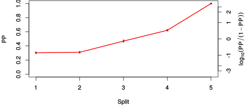

| chain # | burnin | subsample | Iterations (remaining) | command line | subdirectory | directory |
|---|---|---|---|---|---|---|
| 1 | 10000 | 1 | 90000 | bali-phy cat_E6_E7_AA_red3_PerissoArtio.fas -s 89743 -n PerissoArtio_c1 | PerissoArtio_c1-1 | /DATA/work/ONCOGENEVOL/database/trees/Bali-Phy/red3/cat_E6_E7 |
| 2 | 10000 | 1 | 90000 | bali-phy cat_E6_E7_AA_red3_PerissoArtio.fas -s 30291 -n PerissoArtio_c2 | PerissoArtio_c2-1 | /DATA/work/ONCOGENEVOL/database/trees/Bali-Phy/red3/cat_E6_E7 |
| 3 | 10000 | 1 | 90000 | bali-phy cat_E6_E7_AA_red3_PerissoArtio.fas -s 53627 -n PerissoArtio_c3 | PerissoArtio_c3-1 | /DATA/work/ONCOGENEVOL/database/trees/Bali-Phy/red3/cat_E6_E7 |
| P(data|M) = -3463.109 +- 0.199 | Complete sample: 15 topologies | 95% Bayesian credible interval: 9 topologies |
Phylogeny Distribution

| Partition support: Summary |
| Partition support graph: SVG |
{kind=link}
| 50% consensus | Newick (+PP) | SVG | |||||
| 66% consensus | Newick (+PP) | SVG | |||||
| 80% consensus | Newick (+PP) | SVG | |||||
| 90% consensus | Newick (+PP) | SVG | |||||
| 95% consensus | Newick (+PP) | SVG | |||||
| 99% consensus | Newick (+PP) | SVG | |||||
| 100% consensus | Newick (+PP) | SVG | |||||
| MAP | Newick (+PP) | SVG | |||||
| greedy | Newick (+PP) | SVG |
{kind=link}
{kind=link}
{kind=link}
{kind=link}
{kind=link}
{kind=link}
{kind=link}
{kind=link}
Alignment Distribution
Partition 1
| Diff | Min. %identity | # Sites | Constant | Informative | ||||
|---|---|---|---|---|---|---|---|---|
| Initial | FASTA | HTML | Diff | 4.62% | 260 | 1 (0.385%) | 54 (20.8%) | |
| Best (WPD) | FASTA | HTML | AU | 18.9% | 308 | 23 (7.47%) | 90 (29.2%) |
Mixing
{kind=link}
{kind=link}
| burnin (scalar) | ESS (scalar) | ESS (partition) | ASDSF | MSDSF | PSRF-CI80% | PSRF-RCF |
|---|---|---|---|---|---|---|
| 979 | 3474 | 8568.776 | 0.006 | 0.011 | 1.001 | 1.007 |
Projection of RF distances for the first 3 chains 3D 3D | Variation of split PPs across chains |
Scalar variables
| Statistic | Median | 95% BCI | ACT | ESS | burnin | PSRF-CI80% | PSRF-RCF |
|---|---|---|---|---|---|---|---|
| prior | -330.1 | (-383.1, -285.4) | 43.85 | 6156 | 601 | 1 | 0.9981 |
| prior_A1 | -309.1 | (-359.9, -265.1) | 33.96 | 7950 | 601 | 1.001 | 0.9982 |
| likelihood | -3441 | (-3463, -3418) | 9.621 | 28063 | 248 | 1 | 1.005 |
| logp | -3771 | (-3817, -3731) | 46.1 | 5857 | 297 | 0.9995 | 0.9966 |
| Heat.beta | 1 | ||||||
| Scale1 | 3.67 | (1.614, 6.997) | 1.01 | 267372 | 105 | 1 | 0.9983 |
| S1.F.pi.A | 0.05382 | (0.04116, 0.06795) | 8.209 | 32890 | 208 | 1 | 1.002 |
| S1.F.pi.R | 0.07807 | (0.06096, 0.09552) | 8.473 | 31864 | 620 | 1 | 0.9955 |
| S1.F.pi.N | 0.03 | (0.02042, 0.04063) | 7.883 | 34253 | 345 | 1 | 0.9974 |
| S1.F.pi.D | 0.05339 | (0.03982, 0.06792) | 8.02 | 33664 | 213 | 1 | 1 |
| S1.F.pi.C | 0.0531 | (0.03785, 0.06989) | 8.019 | 33668 | 346 | 1 | 0.9976 |
| S1.F.pi.Q | 0.02977 | (0.02089, 0.0397) | 8.131 | 33207 | 484 | 1 | 0.991 |
| S1.F.pi.E | 0.05253 | (0.03913, 0.06684) | 8.152 | 33119 | 546 | 1 | 0.997 |
| S1.F.pi.G | 0.07458 | (0.05634, 0.09394) | 8.817 | 30623 | 452 | 1 | 1.001 |
| S1.F.pi.H | 0.0278 | (0.01857, 0.03782) | 7.985 | 33814 | 155 | 1 | 0.9985 |
| S1.F.pi.I | 0.02989 | (0.02031, 0.04078) | 8.455 | 31932 | 428 | 0.9998 | 0.9987 |
| S1.F.pi.L | 0.0976 | (0.07817, 0.1183) | 7.953 | 33950 | 569 | 0.9994 | 1 |
| S1.F.pi.K | 0.0538 | (0.04123, 0.0672) | 8.408 | 32112 | 335 | 0.9997 | 1 |
| S1.F.pi.M | 0.008239 | (0.003606, 0.01381) | 8.364 | 32280 | 534 | 1 | 1 |
| S1.F.pi.F | 0.0438 | (0.03126, 0.05729) | 7.977 | 33845 | 396 | 1 | 1 |
| S1.F.pi.P | 0.07492 | (0.0573, 0.09385) | 8.787 | 30726 | 292 | 0.9999 | 1 |
| S1.F.pi.S | 0.06164 | (0.04836, 0.07584) | 8.069 | 33459 | 438 | 1 | 0.9989 |
| S1.F.pi.T | 0.0542 | (0.04111, 0.06784) | 7.663 | 35233 | 508 | 1 | 0.9941 |
| S1.F.pi.W | 0.01419 | (0.00689, 0.02274) | 8.201 | 32923 | 777 | 1 | 0.9979 |
| S1.F.pi.Y | 0.04941 | (0.03501, 0.06501) | 8.05 | 33539 | 979 | 1 | 1.002 |
| S1.F.pi.V | 0.05311 | (0.04018, 0.06718) | 7.745 | 34860 | 658 | 0.9999 | 1 |
| I1.RS07.meanIndelLengthMinus1 | 2.592 | (1.551, 3.931) | 13.2 | 20460 | 318 | 0.9998 | 1 |
| I1.RS07.logLambda | -3.958 | (-4.334, -3.587) | 10.38 | 26018 | 221 | 1 | 1.001 |
| |A1| | 308 | (292, 328) | 77.71 | 3474 | 431 | 0.9429 | 1.007 |
| #indels1 | 41 | (34, 49) | 32.77 | 8238 | 270 | 0.8438 | 1 |
| |indels1| | 145 | (120, 178) | 34.1 | 7917 | 464 | 0.9652 | 0.9987 |
| #substs1 | 628 | (607, 644) | 64.47 | 4188 | 291 | 0.9324 | 1.004 |
| Scale1*|T| | 4.622 | (4.171, 5.09) | 3.343 | 80759 | 226 | 1 | 0.9999 |
| |A| | 308 | (292, 328) | 77.71 | 3474 | 431 | 0.9429 | 1.007 |
| #indels | 41 | (34, 49) | 32.77 | 8238 | 270 | 0.8438 | 1 |
| |indels| | 145 | (120, 178) | 34.1 | 7917 | 464 | 0.9652 | 0.9987 |
| #substs | 628 | (607, 644) | 64.47 | 4188 | 291 | 0.9324 | 1.004 |
| |T| | 1.26 | (0.5037, 2.265) | 1.001 | 269621 | 88 | 0.9999 | 0.9992 |